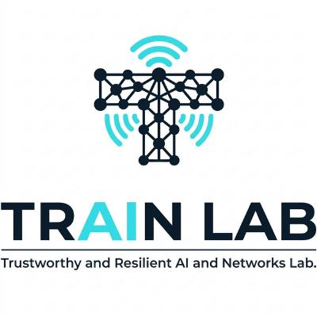
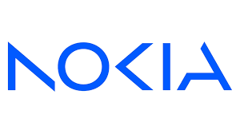

Research Interests
Next-Generation Wireless Networks (6G), AI-RAN, Integrated Sensing and Communication (ISAC), Semantic Communications, Causal Inference in Wireless Systems, and Edge Intelligence.
Education
Worcester Polytechnic Institute (WPI)
PhD in Electrical and Computer Engineering
Location: Worcester, MA
Research Focus: AI-RAN, Semantic Communication and AI-native Networks
National Institute of Technology (NIT), Calicut
B.Tech in Electronics and Communication Engineering
Location: Kerala, India
Cumulative GPA: 9.53/10
Experience

TRAIN LAB
PhD Researcher
- Trustworthy and Resilient AI and Networks Lab at Worcester Polytechnic Institute.
- Focusing on 6G, AI-RAN, and Semantic Communication.

|Nokia & IIT Madras
Project Associate (ISAC Waveform Project)
- Conducted simulations for OFDM, DFT-s-OFDM, and OTFS waveforms within 3GPP TR38.901.
- Engineered precoding techniques to integrate DFT-s-OFDM/OTFS into standard OFDM architectures.
- Developed a periodogram-based sensing framework for base stations.
IIT Madras
Summer Fellow
- Engineered "Velocity Profile" algorithm for Human Activity Recognition (HAR) using Wi-Fi CSI.
- Optimized pipelines to compress CSI data by $10^5$, fitting DL models on edge devices.
- Deployed a real-time prototype using ESP32 with a custom dataset of 6,000 samples.

IIT Hyderabad
Research Intern
- Developed LSTM-Unet, a hybrid DL architecture for 12-Lead ECG reconstruction from 3-Lead inputs.
- Achieved 94.7% accuracy, enabling low-cost clinical-grade cardiac monitoring.
ISRO (Space Physics Laboratory)
Intern
- Designed a Python GUI for control and monitoring of HF RADAR systems.
- Implemented multi-threading for seamless real-time radar control.
Publications
Albert Shaju, et al., "Interpretable Machine Learning Model for Indoor Activity Sensing Using WiFi on the Edge," IEEE National Conference on Communications (NCC), 2026. (Accepted)
Albert Shaju, R.L.R, and S. Jana, "3-Lead to 12-Lead ECG Reconstruction: A Novel AI-based Spatio-Temporal Method," IEEE 20th India Council International Conference (INDICON), 2023.
A. Mallick, R.L.R, Albert Shaju, et al., "AI-based 3-Lead to 12-Lead ECG Reconstruction: Towards Smartphone-based Public Healthcare," IEEE International Conference on E-health Networking, Application & Services (HealthCom), Nara, Japan, 2024.
Technical Skills
Programming
Hardware & Simulation
 NVIDIA Sionna
LT Spice
Proteus
NVIDIA Sionna
LT Spice
Proteus
 ESP32
ESP32
AI/ML Expertise
Achievements
- Gold Medalist: All India Topper for NPTEL course "Linear Algebra through Geometry" (IISc Bangalore).
- Silver Medalist: Top 2% in NPTEL course "Responsible & Safe AI Systems" (IIT Madras).
- National Merit: AIR 141 in NISER entrance; AIR 302 in CEBS; Rank 297 in KEAM.